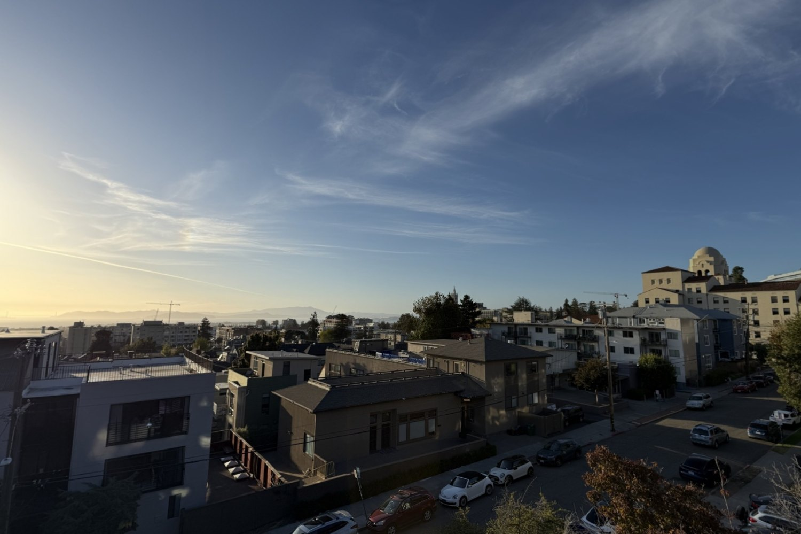
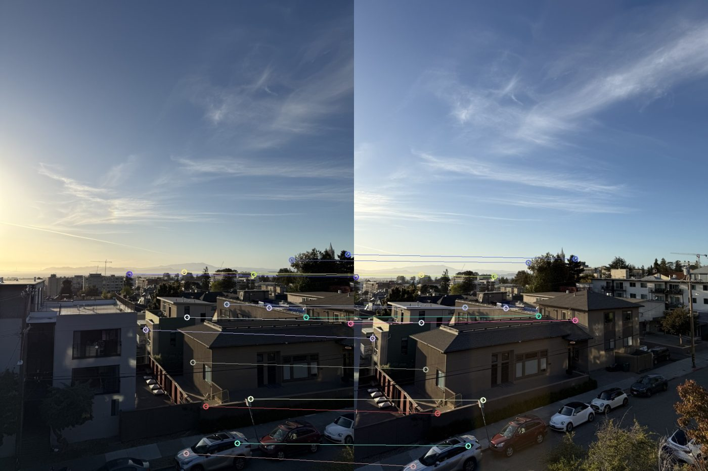
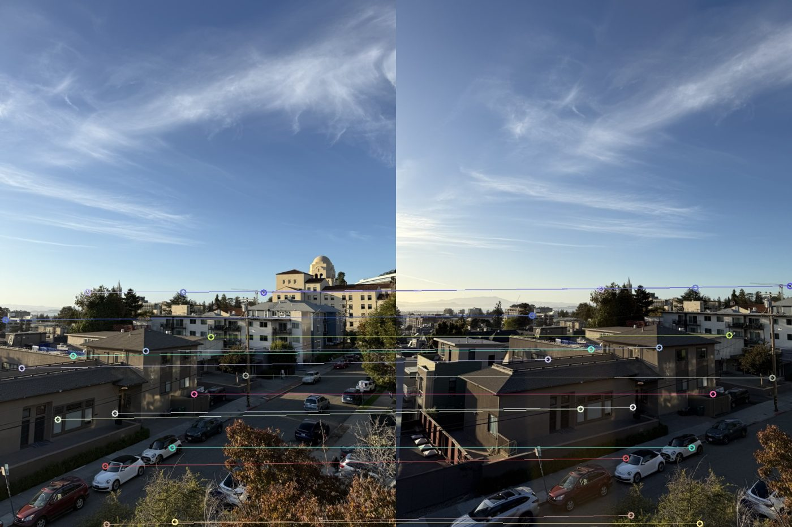
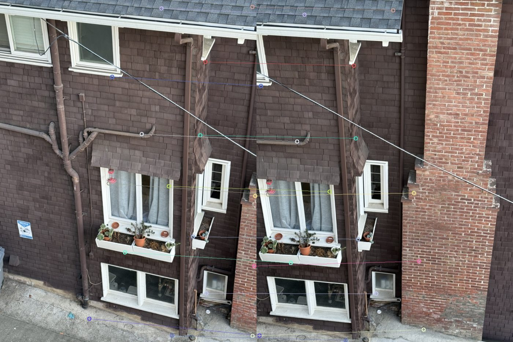
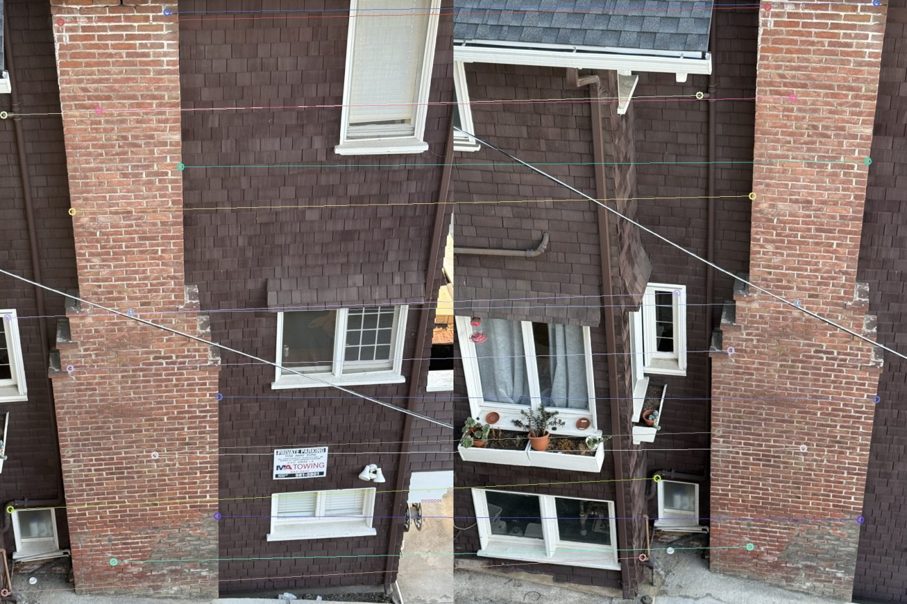
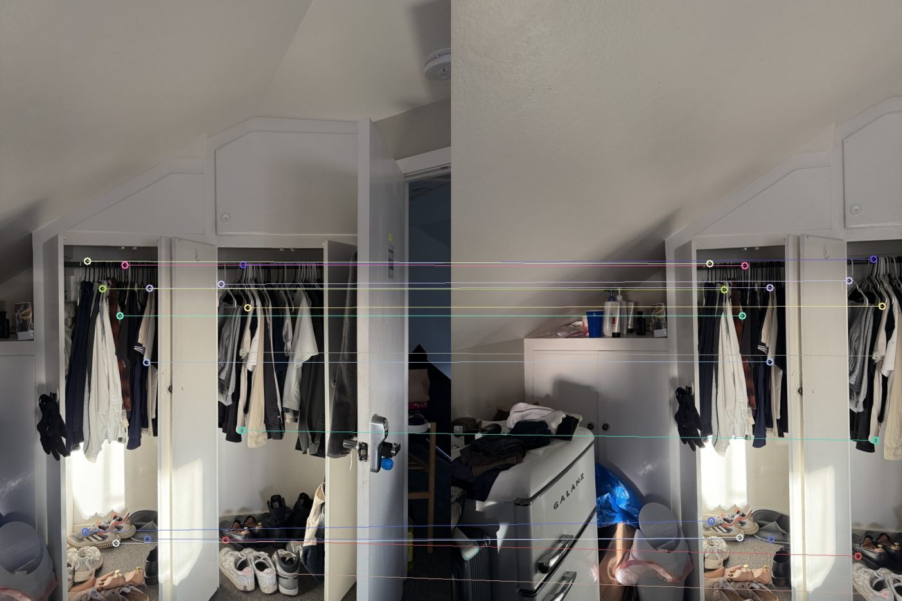

Project 4 · Part A
Recovering homographies from point correspondences, warping images by hand with two kinds of interpolation, rectifying photos of rectangles, and stitching overlapping photos into seamless mosaics.

Mosaic 1 — three handheld photos of the same skyline, warped into one frame.
A.1
A projective mosaic only works if the transform between photos really is a homography, so the key is to fix the camera's center of projection and rotate it, rather than walking sideways. I stood still and pivoted for each set, used the normal 1× lens (no ultra-wide distortion), and aimed for roughly 50–60% overlap between neighbours. I shot three mosaic sets and used a monitor and a window as the known rectangles.
Set 1 · Rooftop skyline
Set 2 · Brick wall
Set 3 · Closet
A.2
A homography H maps a point (x, y) in one image to (x', y') in another, up to a
scale. Fixing the bottom-right entry to 1 leaves eight unknowns. Writing out
x' = (h1·x + h2·y + h3) / (h7·x + h8·y + 1) and multiplying through by the denominator makes each
equation linear in h, so every correspondence contributes two rows:
// one correspondence (x,y) → (x',y') unknowns h = [h1 … h8]ᵀ [ x y 1 0 0 0 -x·x' -y·x' ] · h = x' [ 0 0 0 x y 1 -x·y' -y·y' ] · h = y' // n points stack into A (2n × 8) and b (2n), solved in least squares h = argmin ‖ A h − b ‖² → np.linalg.lstsq(A, b)
With more than four points the system is overdetermined, which averages out click noise. Before solving I
normalize the points (translate them to their centroid and scale to a mean distance of √2), then fold the
normalization back into H. Raw pixel coordinates span hundreds of units while the last column of A is 1, so
without this the system is badly conditioned.
Sanity checks: a synthetic homography is recovered to within 5e-13, and with 0.5 px of noise added to
12 points the mean reprojection error is 0.4 px. For example, the monitor rectification below solves to
Hmonitor =
[ 0.99489 0.02356 -187.506 ]
[ -0.14220 0.98224 -34.308 ]
[ -0.00033 -0.00001 1.000 ]
A.3
Both warps use inverse warping, which leaves no holes: I push the four image corners through H
to size the output canvas, then for every output pixel apply H⁻¹, divide by the homogeneous
coordinate, and read the source image at that location. Anything that lands outside the source gets alpha 0, which the mosaic
blend needs later. Everything is vectorized with NumPy; no library warp or interpolation routine is used.
warpImageNearestNeighbor rounds the source coordinate to the closest pixel. Fast, but diagonal edges turn into stair-steps.warpImageBilinear takes the weighted average of the four surrounding pixels, weighted by the fractional offsets. Smooth edges, very slightly softer. It matches cv2.warpPerspective to ~7e-7 in a test.To test the code on its own, I took photos of known rectangles and mapped their four corners to a true rectangle. The monitor's bezel goes to a 1392×800 rectangle. For the white-framed window I picked the aspect ratio at which its panes come out square.
Monitor · original, clicked corners in gold
Monitor · rectified (bilinear)
Window · original, clicked corners in gold
Window · rectified (bilinear)
Zoomed 4× on the same patch: nearest neighbor (left) leaves a visibly jagged, stair-stepped edge on the window's slanted muntin, while bilinear (right) is smooth.
4× crops · left nearest, right bilinear
A.4
Each mosaic picks one image (the middle one, or the first for the two-photo set) as the reference and warps the others into its frame. Pasting them directly leaves hard seams, so the layers are blended:
computeH, then thinned to 16 well-spread points per image pair. The final H is solved with computeH from those points (mean reprojection error 1.0–1.6 px).Mosaic 1
Result · Laplacian blend. The clouds and sunset gradient cross both seams with no visible edge.
Mosaic 2
Result · Laplacian blend. Windows, drainpipes, and the wire line up across both seams.
Mosaic 3
Result · Laplacian blend. Flip the toggle to see the difference.
This is the hard case. The open doors and the hanging clothes sit at different depths from the closet frame, and the camera shifts a little between shots, so no single homography fits everything. The weighted average doubles the left door and the clothes; the Laplacian blend keeps the frame aligned and takes edges from one image only, which mostly hides the ghosting. The photographs would need a pure rotation, or a flatter scene, to eliminate it.
16 matched points per image pair, drawn on the source (left) and reference (right).

Skyline · image 1 → reference

Skyline · image 3 → reference

Brick wall · image 1 → reference

Brick wall · image 3 → reference

Closet · image 2 → reference
Takeaways
Point selection matters more than the solver. Points on one plane reproject to about a pixel; points on things at a different depth (the chimney, the wire, the open closet doors) can't all fit one homography, and no amount of least squares fixes that. Normalizing coordinates before the solve is nearly free and keeps the system well conditioned. And bilinear sampling removes the stair-stepping that nearest neighbor leaves behind in a rectified image.
Part B will move from hand-picked correspondences to automatic feature matching.